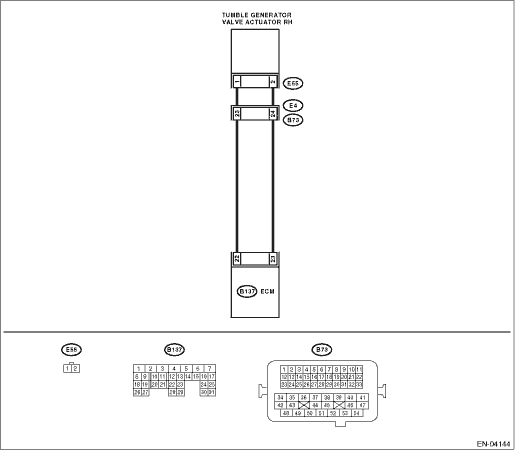
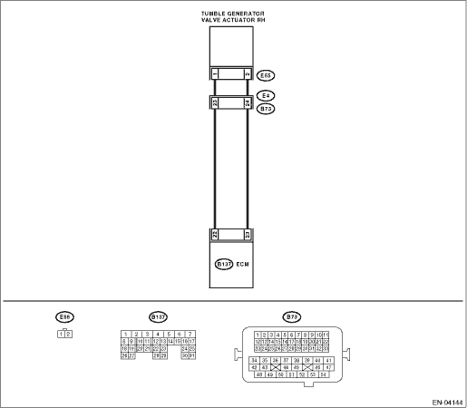

DTC DETECTING CONDITION:
Immediately at fault recognition
CAUTION:
After repairing or replacing the defective part, perform the Clear Memory Mode  and Inspection Mode .
and Inspection Mode .
WIRING DIAGRAM:


ENGINE (DIAGNOSTICS)(H4SO) > Diagnostic Procedure with Diagnostic Trouble Code (DTC)
DTC P2008 INTAKE MANIFOLD RUNNER CONTROL CIRCUIT / OPEN (BANK 1)
DTC DETECTING CONDITION:
Immediately at fault recognition
CAUTION:
After repairing or replacing the defective part, perform the Clear Memory Mode and Inspection Mode .
WIRING DIAGRAM:
